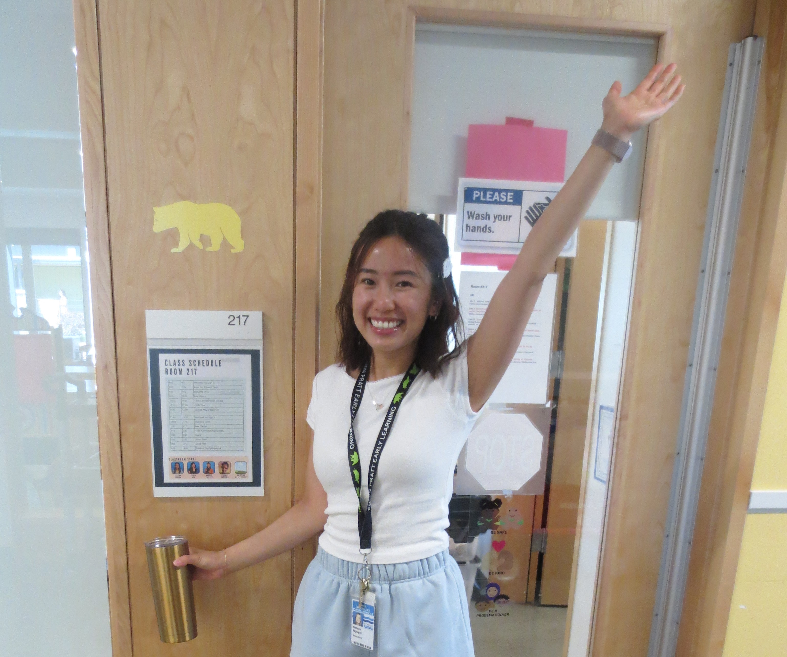

About
A data analyst who speaks human.

I spent five years as a teacher in the Greater Seattle School District, tracking student performance, spotting trends, and translating data into action plans families could actually understand. I realized I was already doing the work of an analyst, I just needed to make it official.
Since pivoting into data analytics, I’ve built ETL pipelines, designed Tableau dashboards for VP-level audiences, and used SQL to cut customer wait times by 55%. What sets me apart? I don't just find the insights, I make sure my audience understands and can act on it.
SQL
Python
Tableau
Pandas
Excel
Snowflake
Google Sheets
A/B Testing
EDA
Cohort Analysis
KPI Reporting
Stakeholder Reporting
Data Cleaning
Statistical Analysis
Pre/Post Analysis
Business Intelligence
🧠
Depth Behind the Data
Five years across education and customer success built a skill most analysts don't have: I know how to work with stakeholders at every level. I've built trust with 30+ people across organizations and learned what decision-makers need before they ask.
🗣️
Findings That Land
Teaching complex subjects to diverse audiences for five years sharpened one skill above everything else: translating complexity into clarity. I bring that same instinct to SQL findings, Tableau dashboards, and VP-level briefings.
⚙️
Process Improver
I don't stop at the dashboard. I've redesigned staffing models, identified that mismatched plan recommendations drove churn at 68%, flagged $151K in pay variances, and delivered concrete next steps across five industries.